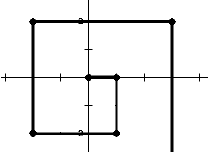
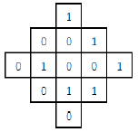

一、单选题(共20题，每题1.5分，共计30分；每题有且仅有一个正确选项)
| 1. | 在8 位二进制补码中，10101011表示的数是十进制下的（ ）。 |
|---|
| 2. | 计算机存储数据的基本单位是（ ）。 |
|---|
| 3. | 下列协议中与电子邮件无关的是（ ）。 |
|---|
| 4. | 分辨率为800x600、16 位色的位图，存储图像信息所需的空间为（ ）。 |
|---|
| 5. | 计算机应用的最早领域是（ ）。 |
|---|
| 6. | 下列不属于面向对象程序设计语言的是（ ）。 |
|---|
| 7. | NOI的中文意思是（ ）。 |
|---|
| 8. | 2017年10月1日是星期日，1999年10月1日是（ ）。 |
|---|
| 9. | 甲、乙、丙三位同学选修课程，从4门课程中，甲选修2门，乙、丙各选修3门，则不同的选修方案共有（ ）种。 |
|---|
| 10. | 设G是有n个结点、m条边（n≤m）的连通图，必须删去G的（ ）条边，才能使得G变成一棵树。 |
|---|
| 11. | 对于给定的序列{ak}，我们把 (i,j)称为逆序对当且仅当i<j 且ai>aj。那么序列1,7,2,3,5,4 的逆序对数为（ ）个。 |
|---|
| 12. | 表达式a*(b+c)*d的后缀形式是（ ）。 |
|---|
| 13. | 向一个栈顶指针为hs的链式栈中插入一个指针s指向的结点时，应执行（ ）。 |
|---|
| 14. | 若串S="copyright"，其子串的个数是（ ）。 |
|---|
| 15. | 十进制小数13.375对应的二进制数是（ ）。 |
|---|
| 16. | 对于入栈顺序为a,b,c,d,e,f,g的序列，下列（ ）不可能是合法的出栈序列。 |
|---|
| 17. | 设A和B是两个长为n的有序数组，现在需要将A和B合并成一个排好序的数组， 任何以元素比较作为基本运算的归并算法在最坏情况下至少要做（ ）次比较。 |
|---|
| 18. | 从（ ）年开始，NOIP竞赛将不再支持Pascal语言。 |
|---|
| 19. | 一家四口人，至少两个人生日属于同一月份的概率是（ ）（假定每个人生日属于每个月份的概率相同且不同人之间相互独立）。 |
|---|
| 20. | 以下和计算机领域密切相关的奖项是（ ）。 |
|---|
二、问题求解(共2题，每题5分，共计10分)
| 1. | 一个人站在坐标(0,0)处，面朝x轴正方向。第一轮，他向前走1单位距离，然后右转； 第二轮，他向前走2单位距离，然后右转；第三轮，他向前走3单位距离，然后右转…… 他一直这么走下去。请问第2017轮后，他的坐标是： (， )。 |  |
|---|
| 2. | 如右图所示，共有13个格子。对任何一个格子进行一次操作，会使得它自己以及与它上下左右相邻的格子中 的数字改变（由1变0，或由0变1）。现在要使得所有的格子中的数字都变为0， 至少需要 次操作。 |  |
|---|
三、阅读程序写结果(共4题，每题8分，共计32分)
| 1. |
#include <iostream>
using namespace std;
int main() {
int t[256];
string s;
int i;
cin >> s;
for (i = 0; i < 256; i++)
t[i] = 0;
for (i = 0; i < s.length(); i++)
t[s[i]]++;
for (i = 0; i < s.length(); i++)
if (t[s[i]] == 1) {
cout << s[i] << endl;
return 0;
}
cout << "no" << endl;
return 0;
}
|
|---|---|
| 输入：xyzxyw | |
| 输出： |
| 2. |
#include <iostream>
using namespace std;
int g(int m, int n, int x) {
int ans = 0;
int i;
if (n == 1)
return 1;
for (i = x; i <= m / n; i++)
ans += g(m - i, n - 1, i);
return ans;
}
int main() {
int t, m, n;
cin >> m >> n;
cout << g(m, n, 0) << endl;
return 0;
}
|
|---|---|
| 输入：7 3 | |
| 输出： |
| 3. |
#include <iostream>
using namespace std;
int main() {
string ch;
int a[200];
int b[200];
int n, i, t, res;
cin >> ch;
n = ch.length();
for (i = 0; i < 200; i++)
b[i] = 0;
for (i = 1; i <= n; i++) {
a[i] = ch[i - 1] - '0';
b[i] = b[i - 1] + a[i];
}
res = b[n];
t = 0;
for (i = n; i > 0; i--) {
if (a[i] == 0)
t++;
if (b[i - 1] + t < res)
res = b[i - 1] + t;
}
cout << res << endl;
return 0;
}
|
|---|---|
| 输入：1001101011001101101011110001 | |
| 输出： |
| 4. |
#include <iostream>
using namespace std;
int main() {
int n, m;
cin >> n >> m;
int x = 1;
int y = 1;
int dx = 1;
int dy = 1;
int cnt = 0;
while (cnt != 2) {
cnt = 0;
x = x + dx;
y = y + dy;
if (x == 1 || x == n) {
++cnt;
dx = -dx;
}
if (y == 1 || y == m) {
++cnt;
dy = -dy;
}
}
cout << x << " " << y << endl;
return 0;
}
|
|---|---|
| 输入1：4 3 | |
| 输出1： | |
| 输入2：2017 1014 | |
| 输出2： |
四、完善程序(共2题，每题14分，共计28分)
| 1. |
（快速幂）请完善下面的程序，该程序使用分治法求xp mod m 的值。 输入：三个不超过10000 的正整数x，p，m。 输出：xp mod m 的值。 提示：若p为偶数，xp=(x2)p/2； 若p为奇数，xp=x*(x2)(p-1)/2。 |
|---|
#include <iostream>
using namespace std;
int x, p, m, i, result;
int main() {
cin >> x >> p >> m;
result = ;
while ( ) {
if (p % 2 == 1)
result = ;
p /= 2;
x = ;
}
cout << << endl;
return 0;
}
|
| 2. |
（切割绳子）有n条绳子，每条绳子的长度已知且均为正整数。
绳子可以以任意正整数长度切割，但不可以连接。现在要从这些绳子中切割出m条长度相同的绳段，
求绳段的最大长度是多少。 输入：第一行是一个不超过100的正整数n，第二行是n个不超过106的正整数， 表示每条绳子的长度，第三行是一个不超过108的正整数m。 输出：绳段的最大长度，若无法切割，输出Failed。 |
|---|
#include <iostream>
using namespace std;
int n, m, i, lbound, ubound, mid, count;
int len[100]; // 绳子长度
int main() {
cin >> n;
count = 0;
for (i = 0; i < n; i++) {
cin >> len[i];
;
}
cin >> m;
if () {
cout << "Failed" << endl;
return 0;
}
lbound = 1;
ubound = 1000000;
while () {
mid = ;
count = 0;
for (i = 0; i < n; i++)
;
if (count < m)
ubound = mid - 1;
else
lbound = mid;
}
cout << lbound << endl;
return 0;
}
|